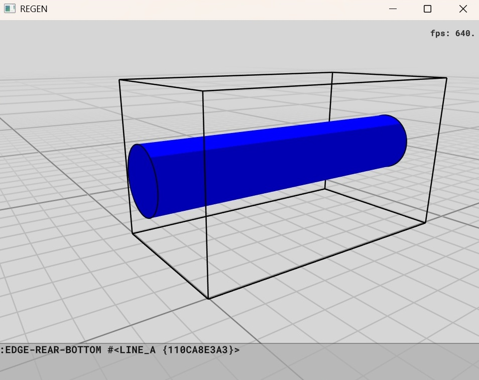
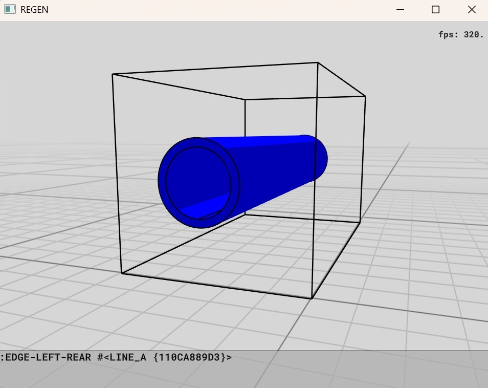

Configurations
A generative object need not have a fixed composition. The class of one of its components can be determined by an expression, so changing an input can replace one kind of component with another. This chapter develops that capability using the shaft-and-support example from Chapter 5.
cylinder_b, hollow-cylinder_b, and prism_a are concrete geometry classes; their implementations are not reproduced here. Package imports are assumed, as in the preceding chapters. The example illustrates existing configuration behavior rather than a proposed configuration facility.6.1 Parameters and Configurations
In the preceding example, changing shaft-length changes numerical dimensions without changing the class of main-shaft. A configuration can go further: it can select a different component class and thereby change the assembly's composition.
Here, the alternative shaft classes represent a solid cylindrical shaft and a hollow cylindrical shaft. The latter has an opening through its length. The surrounding support remains a shaft-support object; its main-shaft component is generated according to the current configuration.
These operations are not separate programming languages or construction phases. Numerical parameters and component-type selection are both expressed using ordinary Common Lisp expressions within defobject definitions.
6.2 The Configurable Shaft Support
The following is the complete example:
(defobject positioned-shaft (cylinder_b)
:inputs
((radius :visual 10)
(display :visual :shaded)))
(defobject hollow-positioned-shaft (hollow-cylinder_b)
:inputs
((radius :visual 10)
(thickness :visual 9)
(display :visual :shaded)))
(defobject shaft-support (prism_a)
:inputs
((shaft-length :visual 100)
(shaft-wall-thickness :visual 2)
(width :visual (- (the shaft-length) 10))
(length :visual 50)
(height :visual 50)
(hint :visual :grey-elephant))
:components
((main-shaft
:type (if (eq (the hint) :pink-elephant)
'hollow-positioned-shaft
'positioned-shaft)
center-on (the centroid)
height (the shaft-length)
thickness (the shaft-wall-thickness)
rotation (qrotation (vec3 0 1 0) (/ pi 2)))))positioned-shaft inherits from cylinder_b. hollow-positioned-shaft inherits from hollow-cylinder_b and additionally declares thickness. Both shafts declare a radius input and override display to default to :shaded.
The support declares shaft-length, shaft-wall-thickness, and a derived width in addition to its other dimensions. Its hint input defaults to :grey-elephant. The intentionally memorable :pink-elephant value selects the alternative shaft class.
Regen maintains dependency records for inputs whether or not they are declared :visual. The :visual keyword selects a different dependency-management protocol for the input's dependency list: in addition to invalidating cached values, it also updates the graphics. This distinction exists because not all generative objects are graphical objects, and not every dependency network within a generative object affects visual appearance. Only inputs intended to change the object's visual appearance need the :visual declaration.
6.3 A Component Type Determined by an Input
The defining feature of this configuration is the expression in the main-shaft component:
:type (if (eq (the hint) :pink-elephant)
'hollow-positioned-shaft
'positioned-shaft)With the default hint, this expression yields the class name positioned-shaft, and the component is a solid shaft. When hint is :pink-elephant, the expression yields hollow-positioned-shaft. The component's type is not a fixed symbol in the parent definition; it is a computation.
When the value on which that computation depends changes, Adhoc's dependency machinery invalidates the affected component. On subsequent evaluation the component is generated using the newly selected class. The previous component instance is no longer the component supplied by the parent. This is more than adjusting a dimension: a different generative class, and therefore potentially a different geometry and set of attributes, can occupy the same component position.
The name main-shaft continues to identify the component in the parent's definition. It does not imply that the same child CLOS instance survives a change of class.
6.4 Provided Inputs and Child Messages
The main-shaft declaration provides the same expressions to either selected class:
center-on (the centroid)
height (the shaft-length)
thickness (the shaft-wall-thickness)
rotation (qrotation (vec3 0 1 0) (/ pi 2))The first two expressions establish the shaft's position and axial length relative to the support. The rotation turns the shaft around the support's Y axis by 90 degrees. The thickness expression refers to the support's shaft-wall-thickness input, rather than to the hollow shaft's declared default thickness of 9.
Notice that the same provided-input declaration is valid for both component classes. hollow-positioned-shaft declares thickness as an input, so its provided value participates in the normal input and dependency machinery. positioned-shaft does not declare a thickness input, but that does not make the component declaration erroneous.
Instead, the solid shaft can still answer the supplied thickness message, as in:
(send sh-sup main-shaft thickness)For this solid shaft, the provided message has no local cache location and cannot be assigned using setf. If the selected child's class instead defines a local ordinary attribute or component named thickness, messaging that name returns the value determined by the child's local definition. Thus an undeclared provided message is not the same thing as a declared, settable input, and a local definition takes precedence over the parent-supplied expression.
This flexibility allows a parent to describe a common component relationship without branching into separate component declarations for every possible type. It also means the engineer should distinguish carefully between a provided message, a declared child input, and an ordinary attribute or component on the child.
6.5 Symbol Identity and Packages
In Common Lisp, component input and message names are symbols. Their package identities are significant. Two symbols with the same printed name are not equal merely because their names have the same characters:
rgn-geo::thickness
my-package::thicknessThese are different symbols. If a component definition inadvertently supplies a name interned in the wrong package, it may still be accepted as a provided message without overriding the intended declared input. The program can therefore appear to run while producing unexpected values.
When a provided input seems not to take effect, inspect the actual symbols and packages involved in the component definition and the child's slot definitions. Unqualified names in the examples assume that the appropriate symbols have been imported or are accessible in the package in which the definitions are read.
6.6 Live Configuration Changes
The same shaft-support instance can be used to explore both configurations. After constructing and displaying an instance, explicitly assign its hint input to select the hollow component:
;; Here sh-sup denotes an existing shaft-support instance.
(setf (slot-value sh-sup 'hint) :pink-elephant)The assignment uses the input's normal setting mechanism. Since hint is declared :visual, the change requests a graphical update. The type expression changes, the old solid component is invalidated, and the hollow component can be regenerated and displayed in its place. Assigning :grey-elephant restores the solid-shaft configuration:
(setf (slot-value sh-sup 'hint) :grey-elephant)

:pink-elephant configuration.In the running graphics environment, this configuration change also has a resource-lifecycle consequence: the old component's retained graphical primitives must be erased before they are replaced. This is handled by the dependency and graphics machinery; the defobject definition itself does not contain commands to delete or draw KRMA primitives.
The support's other parameters remain part of the surviving parent object. For example, shaft-wall-thickness remains available when switching back to the hollow shaft. The newly selected component obtains its values from the current component declaration rather than by copying cached state from the obsolete child.
6.7 What Component Replacement Means
There are three distinct identities to keep in mind. The parent shaft-support instance remains the same. The component designation main-shaft remains the same within that parent's definition. But the child instance occupying that position may be replaced when the configuration changes.
Consequently, it would be misleading to say that the existing cylinder object simply becomes an instance of hollow-positioned-shaft. The parent determines which class to instantiate, and the dependency system maintains the resulting component hierarchy.
The same principle extends beyond the solid-versus-hollow choice illustrated here: a component type expression may depend on other inputs or computed relationships. More advanced configurations can involve aggregate component sizes and keys, but those mechanisms are deferred until the aggregate-component chapter.
The central lesson is that an assembly's composition can itself be generative. Regen expresses both the relationships among components and the choice of which components exist, while the live graphical environment reflects changes to that generative model.